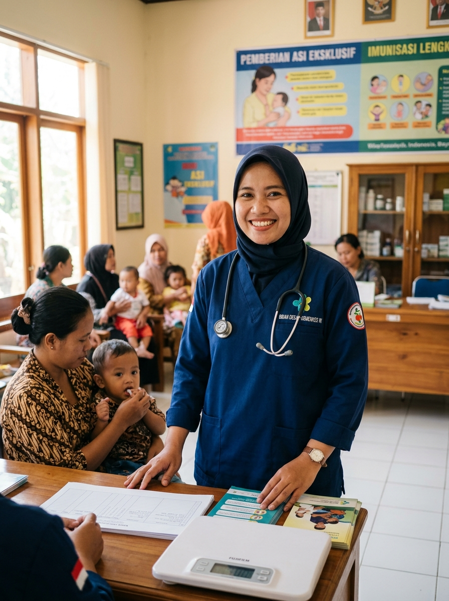
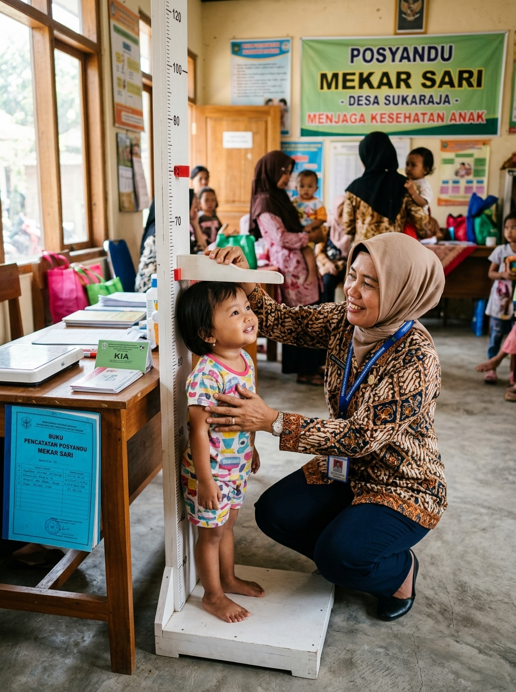
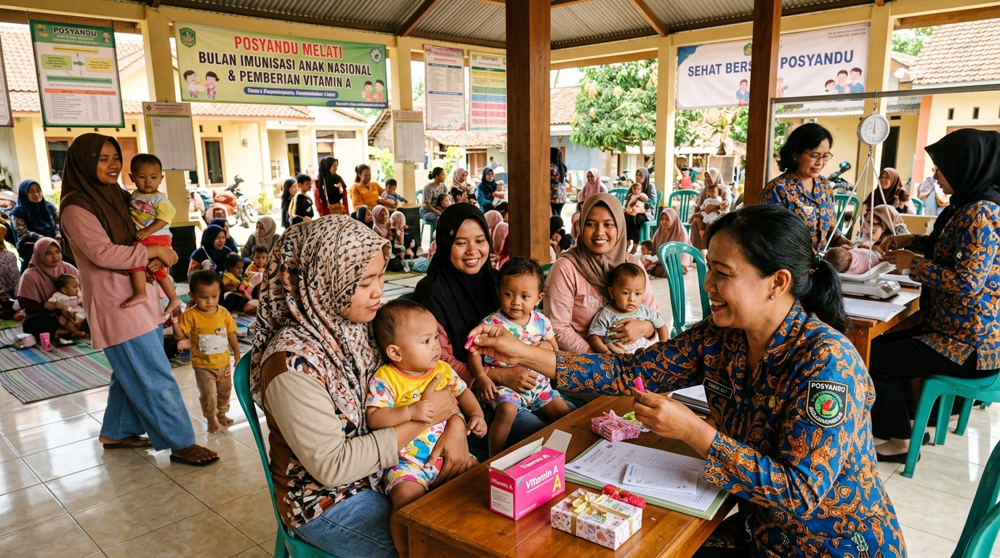
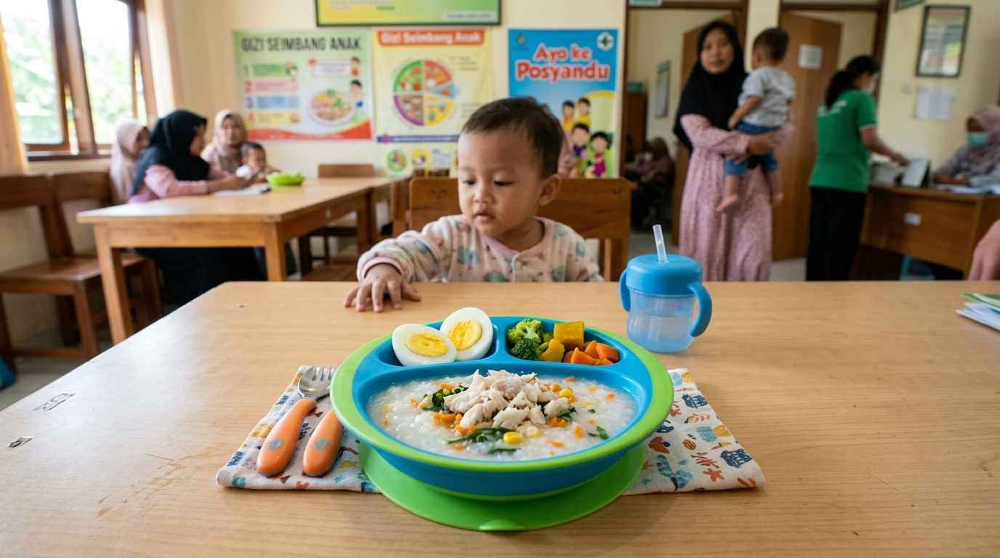
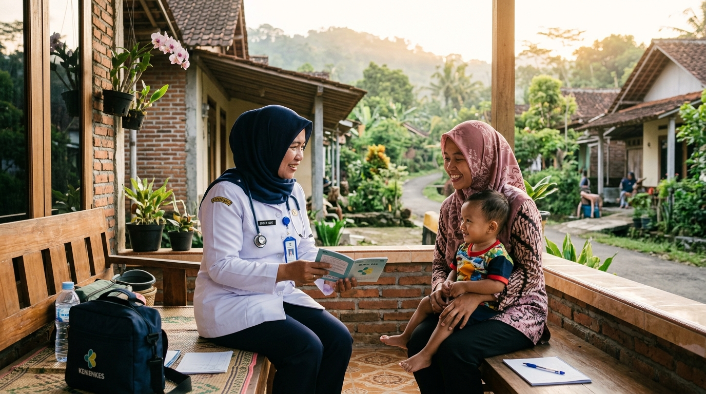

Akses Sistem Posyandu Pintar
Pencatatan lebih rapi. Pemantauan lebih cepat. Masuk ke sistem untuk mengelola data balita, penimbangan bulanan, dan evaluasi tumbuh kembang anak Desa Sukatani.
Posyandu Pintar membantu kader mencatat hasil timbang bulanan dan membantu bidan memantau perkembangan balita dengan lebih rapi.


Riwayat pertumbuhan yang tersimpan dengan rapi membantu kader dan bidan melihat perubahan berat dan tinggi dari bulan ke bulan.
Pencatatan manual di buku fisik menyulitkan kader dan bidan dalam menjaga kesinambungan pemantauan gizi anak desa.
Data pertumbuhan sulit dicari kembali ketika hanya tersimpan dalam buku catatan fisik yang rentan rusak atau tertinggal.
Perubahan berat dan tinggi antar bulan sulit dibandingkan dengan cepat tanpa grafik riwayat yang terstruktur.
Bidan harus memeriksa banyak catatan satu per satu sebelum menemukan balita yang membutuhkan tinjauan gizi lanjutan.
Pelayanan dan pencatatan yang membantu pemantauan tumbuh kembang balita.
Berat dan tinggi badan dicatat pada setiap kunjungan Posyandu untuk memantau status gizi anak secara teratur dan menjaga kesinambungan riwayat KMS digital.
Riwayat pengukuran tersimpan lebih rapi dari satu kunjungan ke kunjungan berikutnya tanpa risiko buku catatan hilang.
Perubahan berat dan tinggi dapat dilihat dari waktu ke waktu sehingga perlambatan pertumbuhan terdeteksi lebih awal.
Balita yang membutuhkan perhatian dapat ditinjau lebih lanjut oleh Bidan Desa untuk konseling gizi atau evaluasi lanjutan.
Tiga tahapan sederhana yang menyambungkan kegiatan penimbangan kader dengan evaluasi bidan desa.
Berat dan tinggi badan dicatat saat kegiatan Posyandu melalui formulir praktis tanpa perlu menghitung usia secara manual.
Pengukuran bulan ini langsung tersimpan bersama riwayat kunjungan sebelumnya untuk membentuk tren pertumbuhan balita.
Balita dengan tren pertumbuhan yang melambat muncul di daftar tinjauan agar intervensi gizi dapat segera disiapkan.
Tampilan disesuaikan dengan alur kerja masing-masing petugas kesehatan desa.
Catat pengukuran dan lihat balita yang belum ditimbang tanpa membuka banyak halaman.
Input angka instan dengan papan ketik desimal dan tombol yang ramah sentuhan.
Lihat balita yang perlu ditinjau dan buka riwayat pertumbuhannya dengan cepat.
Langsung melihat tren pertumbuhan lengkap, grafik riwayat, dan ringkasan kondisi tiap dusun.
Informasi agenda kegiatan kesehatan masyarakat, distribusi gizi, dan kegiatan posyandu desa.

Pemerintah Desa Sukatani bersama Bidan Desa dan Kader mengumumkan jadwal posyandu serentak di 4 dusun pada pekan kedua September.

Pemberian Makanan Tambahan berbasis pangan lokal untuk pertumbuhan balita.

Tinjauan langsung dan konseling gizi keluarga untuk balita dalam pemantauan.
Panduan dan informasi penting seputar pemantauan tumbuh kembang dan gizi balita di Posyandu.
Penimbangan rutin setiap bulan adalah kunci utama mendeteksi perlambatan pertumbuhan sebelum anak mengalami risiko gizi kurang atau stunting.
Sumber protein hewani mengandung asam amino esensial lengkap untuk tinggi badan optimal.
Daftar persiapan sederhana bagi orang tua sebelum menuju meja penimbangan posyandu.
Pencatatan lebih rapi. Pemantauan lebih cepat. Masuk ke sistem untuk mengelola data balita, penimbangan bulanan, dan evaluasi tumbuh kembang anak Desa Sukatani.